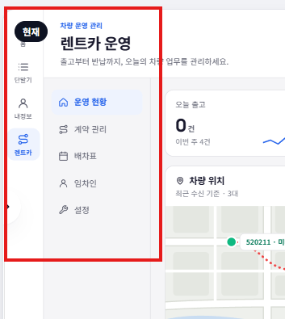
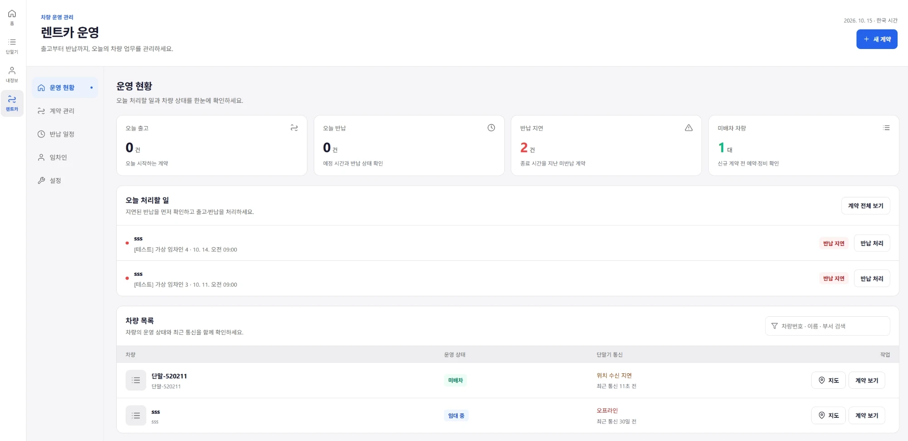
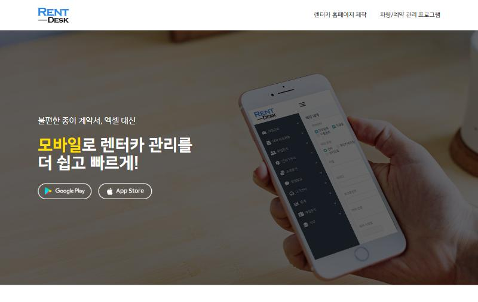
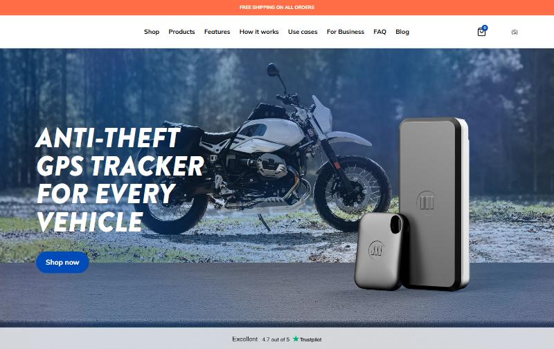
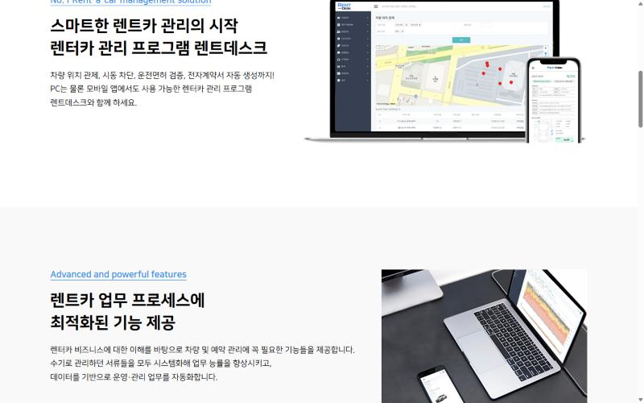
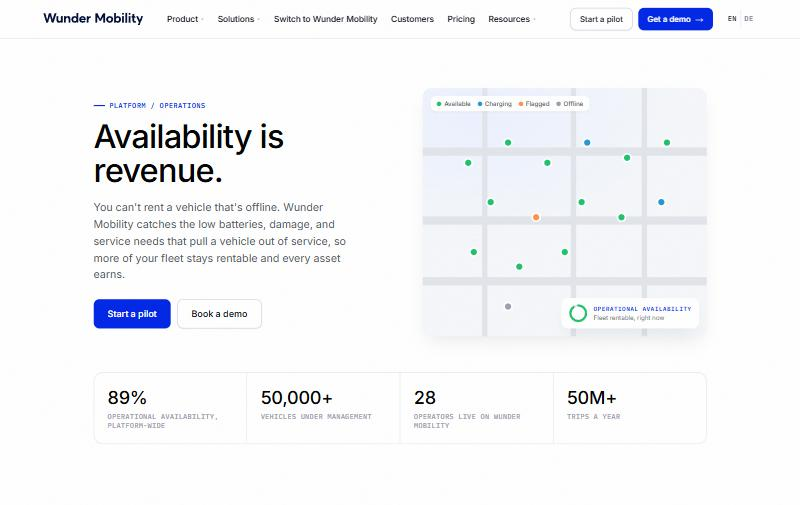
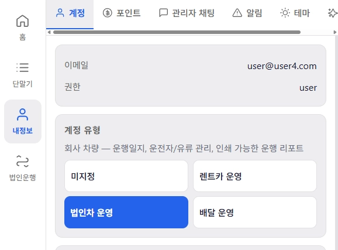
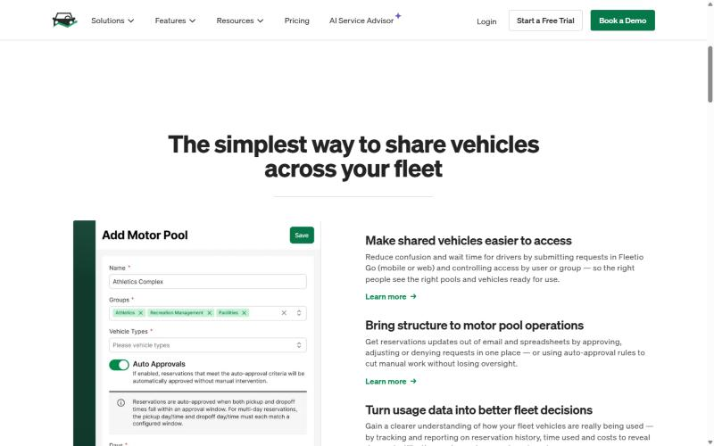

책상에서도 주차장에서도, 첫 화면에서 차와 할 일이 바로 보이게Ofisda ham, avtoturargohda ham: avtomobil va vazifalar birinchi ekranda
법인차·렌트카·배달 세 유형이 같은 틀을 쓰고, 업무가 다른 곳만 따로 만듭니다. 아래 버튼으로 유형을 바꾸면 데스크톱과 휴대폰 화면이 함께 바뀝니다.
Korporativ, rent-a-car va yetkazib berish turlari bitta umumiy tuzilmadan foydalanadi, faqat ish jarayoni farq qiladigan joylar alohida. Pastdagi tugma bilan turni almashtirsangiz, kompyuter va telefon ekranlari birga o'zgaradi.
한눈에Bir qarashda
첫 화면 = 지도 + 오늘 할 일. 메뉴는 한 겹, 탭 하나로 이동.
Birinchi ekran = xarita + bugungi vazifalar. Menyu bitta qavat, bitta tab bilan o'tiladi.
한 손으로Bir qo'l bilan
휴대폰은 하단 탭·스와이프·시트. 주요 버튼은 엄지가 닿는 아래쪽에.
Telefonda pastki tab, surish va pastdan ochiladigan panel. Asosiy tugmalar bosh barmoq yetadigan pastki qismda.
차가 먼저 알려줌Avtomobil o'zi xabar beradi
GPS가 감지하면 할 일과 알림이 자동으로. 사람은 확인 한 번.
GPS aniqlaganda vazifa va xabarnoma avtomatik yaratiladi. Odam faqat bir marta tasdiqlaydi.
공통 틀 하나, 유형별 모듈 몇 개Bitta umumiy tuzilma va har bir tur uchun bir nechta modul
세 유형 모두 "차(오토바이)가 어디 있고, 오늘 무엇을 처리해야 하나"를 먼저 봅니다. 이 질문에 답하는 화면은 공통으로, 계약·예약·배달처럼 절차가 다른 부분만 따로 둡니다.
Uchala tur ham avval "avtomobil (mototsikl) qayerda va bugun nima qilish kerak" degan savolga javob izlaydi. Shu savolga javob beradigan ekranlar umumiy bo'ladi, shartnoma, bron va yetkazib berish kabi jarayoni farq qiladigan qismlargina alohida qilinadi.
메뉴는 한 겹으로: 왼쪽 두 줄 메뉴를 위쪽 탭으로Menyu bitta qavat: chapdagi ikki qator menyu o'rniga tepada tablar
지금은 전체 메뉴(64px)와 업무 메뉴(172px)가 나란히 있고, 그 위에 제목·설명 헤더(약 93px)가 있습니다. 화면 왼쪽 236px과 위쪽 93px가 길 안내에 쓰이고, 사용자는 '렌트카 → 운영 현황'처럼 두 번 골라야 합니다. 휴대폰에서도 하단 탭과 업무 탭이 두 겹입니다.
Hozir umumiy menyu (64px) va ish menyusi (172px) yonma-yon turibdi, ularning ustida sarlavha va izoh (taxminan 93px) bor. Ekranning chap 236px va yuqori 93px qismi faqat yo'naltirishga ketadi, foydalanuvchi "렌트카 → 운영 현황" kabi ikki marta tanlashi kerak. Telefonda ham pastki tab va ish tablari ikki qavat.

같은 일을 하는 메뉴가 두 군데.
Bir xil vazifadagi menyu ikki joyda.
검색 팔레트(components/ui)를 헤더 검색으로 재사용.
Qidiruv paneli (components/ui) sarlavhadagi qidiruv sifatida qayta ishlatiladi.

- 업무 메뉴 → 헤더 탭Ish menyusi → sarlavha tabi왼쪽 172px를 화면으로 돌려줌. 처리할 건수는 탭 옆 빨간 숫자.Chapdagi 172px ekranga qaytariladi. Bajariladigan ishlar soni tab yonida qizil raqam bilan.
- 설명 문구 삭제Izoh matni olib tashlanadi"출고부터 반납까지…" 대신 실시간 상태 한 줄 (차량 5대 · 지연 1)."출고부터 반납까지…" o'rniga real vaqt holati bitta qatorda (5 avtomobil · 1 kechikish).
- 헤더 검색 (Ctrl K)Sarlavhada qidiruv (Ctrl K)차량·임차인·계약을 메뉴 이동 없이 바로 찾기.Avtomobil, ijarachi va shartnomani menyuga o'tmasdan topish.
- 모바일 하단 탭 = 업무 메뉴Mobil pastki tab = ish menyusi단말기·내정보는 '더보기'로. 가운데 + 버튼은 새 계약/예약.Qurilmalar va profil "더보기" ichida. Markaziy + tugmasi yangi shartnoma yoki bron uchun.
모바일 우선: 한 손으로 끝나는 관리Mobil birinchi o'rinda: bir qo'l bilan boshqaruv
렌트카 사장님은 주차장에서, 법인차 담당자와 배달 매장 사장님은 이동 중에 확인합니다. 지금 모바일은 데스크톱 표를 접은 형태라 버튼이 작고, 처리하려면 여러 화면을 거칩니다.
Rent-a-car egasi avtoturargohda, korporativ mas'ul va yetkazib berish do'koni egasi esa yo'lda tekshiradi. Hozirgi mobil ko'rinish kompyuter jadvalini buklagan holat: tugmalar kichik, bitta ishni bajarish uchun bir nechta ekrandan o'tish kerak.


- 하단 탭 + 가운데 큰 버튼Pastki tab + katta markaziy tugma가장 자주 하는 일(새 계약)을 엄지 위치에.Eng ko'p bajariladigan ish (yangi shartnoma) bosh barmoq joyida.
- 스와이프로 처리Surib bajarish목록에서 밀면 '반납 처리'. 화면 이동 없음.Ro'yxatda surilsa "Qaytarish". Ekran almashmaydi.
- 단계는 시트로Bosqichlar panelda확인 → 주행·연료 → 사진 → 정산. 큰 버튼(52px).Tekshirish → masofa va yoqilg'i → rasm → hisob-kitob. Katta tugmalar (52px).
- 표 대신 카드Jadval o'rniga kartalar터치 영역 44px 이상, 글자 13px 이상.Bosish maydoni kamida 44px, matn kamida 13px.
기록은 차가, 확인은 사람이: GPS 자동 감지 + 원탭 처리Yozuvni avtomobil qiladi, odam faqat tasdiqlaydi: GPS avtomatik aniqlash + bir bosish
관리 프로그램 대부분은 사람이 입력해야 기록이 생깁니다. 우리는 GPS가 먼저 압니다. 차가 주차장에 들어왔는지, 몇 km 달렸는지, 업무시간 밖인지, 신호가 끊겼는지. 이 사실을 바로 할 일과 알림으로 바꾸면, 사장님은 확인 버튼만 누르면 됩니다.
Ko'pchilik boshqaruv dasturlarida yozuv faqat odam kiritganda paydo bo'ladi. Bizda esa GPS birinchi bo'lib biladi: avtomobil turargohga kirdimi, necha km yurdi, ish vaqtidan tashqaridami, signal uzildimi. Shu faktlar darhol vazifa va xabarnomaga aylansa, egasi faqat tasdiqlash tugmasini bosadi.
- 규칙은 켜고 끄기만Qoidalar faqat yoqiladi yoki o'chiriladi유형별 기본 규칙이 미리 켜져 있음. 장소·시간만 고르면 끝.Har bir tur uchun asosiy qoidalar oldindan yoqilgan. Faqat joy va vaqtni tanlash kifoya.
- "이번 달 n회"로 효과가 보임"Bu oy n marta" bilan foyda ko'rinadi자동으로 처리한 횟수 = 아낀 시간. 유료 전환 근거.Avtomatik bajarilgan ishlar soni = tejalgan vaqt. Pullik tarifga o'tish uchun asos.
- 잠금화면에서 바로 처리Bloklangan ekrandan darhol알림 안에 [정산 확인]·[위치 보기] 버튼. 앱을 열지 않아도 됨.Xabar ichida [Hisobni tasdiqlash], [Joylashuvni ko'rish] tugmalari. Ilovani ochish shart emas.
- 아침 브리핑Ertalabki brifing매일 08:00, 어제 요약과 오늘 할 일. 기존 AI 운행 분석을 활용.Har kuni 08:00 da kechagi xulosa va bugungi vazifalar. Mavjud AI yurish tahlilidan foydalaniladi.
운영 현황: 지도와 오늘 할 일을 나란히"Holat" sahifasi: xarita va bugungi vazifalar yonma-yon
GPS 서비스인데 첫 화면에 위치가 없습니다. 'sss' 차량은 임대 중인데 30일째 신호가 없지만 할 일 목록에 나오지 않습니다. 법인차 화면은 예약이 0건이면 빈 칸 두 개가 화면을 차지합니다.
Bu GPS xizmati, lekin birinchi ekranda joylashuv yo'q. "sss" avtomobili ijarada bo'lsa ham 30 kundan beri signal bermayapti, lekin vazifalar ro'yxatida ko'rinmaydi. Korporativ sahifada bron 0 ta bo'lsa, ekranni ikkita bo'sh blok egallaydi.
지도는 행마다 '지도' 버튼으로만.
Xarita faqat har bir qatordagi "지도" tugmasi orqali.


- 상태 색 미니맵 + 주차장 구역Holat rangidagi xarita + turargoh hududi임대 중·미배차·지연을 색으로. 점선 = 본사 주차장(자동 감지 기준).Ijarada, bo'sh va kechikkan avtomobillar rang bilan. Punktir = turargoh (avtomatik aniqlash chegarasi).
- 할 일 = 급한 순서Vazifalar muhimlik tartibida반납 지연 옆에 "임대 중 + 신호 끊김". 오늘 반납은 링크 발송까지.Qaytarish kechikishi yonida "ijarada + signal yo'q". Bugungi qaytarish uchun havola yuborish ham shu yerda.
- 지표에 추세Ko'rsatkichda o'zgarish지난주 대비와 작은 그래프. '미배차' 대신 '가동률'.O'tgan haftaga nisbatan farq va kichik grafik. "Bo'sh avtomobil" o'rniga "bandlik darajasi".
- 행에서 바로 처리Qatordan darhol harakat미배차면 '계약 등록'이 기본 버튼.Avtomobil bo'sh bo'lsa, asosiy tugma "Shartnoma tuzish".
차량을 누르면 상세 패널: 데스크톱은 오른쪽, 휴대폰은 아래에서Avtomobil bosilsa batafsil panel: kompyuterda o'ngdan, telefonda pastdan
지금은 '지도' 버튼을 누르면 지도 화면으로 이동하고, 돌아오면 보던 위치를 잃습니다. 차 한 대의 상태를 보려고 화면을 여러 번 오갑니다.
Hozir "지도" tugmasi bosilsa xarita sahifasiga o'tib ketiladi, qaytganda ko'rib turgan joy yo'qoladi. Bitta avtomobil holatini ko'rish uchun sahifalar orasida bir necha marta yurish kerak.
- 페이지 이동 없음Sahifa almashmaydi목록 위로 패널이 열리고, 닫으면 그대로.Panel ro'yxat ustida ochiladi, yopilganda hammasi joyida qoladi.
- 오늘 이동 경로Bugungi yo'l미니맵에 오늘 궤적과 정차 지점.Kichik xaritada bugungi harakat chizig'i va to'xtash joylari.
- 단말기 상태 3칸Qurilma holati, 3 katak마지막 수신·전압·신호. 끊김 원인을 바로 판단.Oxirgi signal, kuchlanish, aloqa sifati. Uzilish sababi darhol aniqlanadi.
- 유형별 탭Turga qarab tablar렌트카: 계약·손상 / 법인차: 운행일지·정비 / 배달: 안전·라이더.Rent-a-car: shartnoma, shikast / Korporativ: jurnal, texnik xizmat / Yetkazish: xavfsizlik, kuryer.
계정 유형 선택: 고르면 무엇이 생기는지 보여주기Akkaunt turini tanlash: tanlansa nima paydo bo'lishini ko'rsatish
지금은 버튼 4개와 설명 한 줄뿐이라 고르기 전에는 무엇이 달라지는지 알 수 없습니다. 이 화면이 사실상 유료 기능의 입구입니다.
Hozir faqat 4 ta tugma va bir qator izoh bor, shuning uchun tanlamaguncha nima o'zgarishini bilib bo'lmaydi. Aslida bu ekran pullik funksiyalarga kirish eshigi.

선택 결과를 미리 볼 수 없음.
Tanlov natijasini oldindan ko'rib bo'lmaydi.
- "이런 회사에 맞아요""Bunday kompaniyaga mos"용어 대신 상황으로 설명.Atama o'rniga vaziyat bilan tushuntiriladi.
- 생기는 메뉴 미리보기Paydo bo'ladigan menyular고르면 추가되는 탭을 카드 하단에.Tanlansa qo'shiladigan tablar kartaning pastida.
- 안심 문구 + 시작 버튼Xotirjamlik matni + boshlash tugmasi"바꿔도 기록은 그대로". 선택 후 바로 해당 화면으로."O'zgartirsangiz ham yozuvlar saqlanadi". Tanlangach, darhol o'sha ekranga.
운행일지와 유류비를 첫 화면 지표로Yurish jurnali va yoqilg'i xarajati birinchi ekranda
법인 고객이 돈을 내는 이유는 운행일지(국세청 별지 73호) 작성 부담입니다. 기능은 이미 있는데 '운행 리포트' 메뉴 안에 숨어 있습니다.
Korporativ mijozlar yurish jurnalini (soliq qo'mitasining 73-shakli) yozish yukidan qutulish uchun pul to'laydi. Funksiya allaqachon bor, lekin "Yurish hisoboti" menyusi ichida yashiringan.
- 작성률 진행 막대To'ldirilish chizig'i운행 + 용무 입력 여부로 바로 계산. 누르면 미입력만 필터.Yurishlar va maqsad kiritilganligidan darhol hisoblanadi. Bosilsa, faqat to'ldirilmaganlari qoladi.
- 유류비 월 합계Oylik yoqilg'i xarajati운행별 입력값 합산. 지난달 대비.Har bir yurishda kiritilgan qiymatlar yig'indisi, o'tgan oyga nisbatan.
- 업무시간 외 운행Ish vaqtidan tashqari yurish업무시간 설정과 GPS 운행 시각 비교. 쏘카 FMS 부정 사용 감지와 같은 발상.Ish vaqti GPS yurish vaqti bilan solishtiriladi. 쏘카 FMS'dagi g'oya.
- 출력은 한 번에Bir bosishda chop etish"미입력 채우기 → 국세청 양식 출력"이 한 카드 안에."To'ldirish → soliq shaklida chop etish" bitta karta ichida.
직원이 신청하고, 관리자는 승인만Xodim so'raydi, admin faqat tasdiqlaydi
지금은 관리자가 모든 예약을 직접 입력합니다. 직원이 10명만 넘어도 메신저로 받은 요청을 옮겨 적는 일이 생깁니다.
Hozir barcha bronni admin o'zi kiritadi. Xodimlar soni 10 tadan oshishi bilan messenjerda kelgan so'rovlarni qo'lda ko'chirib yozish ishi paydo bo'ladi.

- 탭에 대기 건수Tabda kutayotganlar soni빨간 숫자로 놓치지 않게.Qizil raqam bilan, o'tkazib yuborilmasin.
- 신청 링크So'rov havolasi직원은 로그인 없이 신청. 렌트카 인수 링크 방식 재사용.Xodim login qilmasdan so'raydi. Rent-a-car havolasidagi usul qayta ishlatiladi.
- 판단 정보는 칩으로Qaror ma'lumoti chip bilan장거리·겹침 여부·추천 차량.Uzoq masofa, ustma-ust tushish, tavsiya etilgan avtomobil.
- 자동 승인 규칙Avtomatik tasdiq qoidasi조건 3개. 관리자 손은 예외 건에만.3 ta shart. Admin faqat istisnolarni ko'radi.
반납 캘린더 대신 배차표, 휴대폰은 날짜별 목록Qaytarish kalendari o'rniga taqsimot jadvali, telefonda kunlik ro'yxat
월 캘린더는 "날짜별 반납"은 보이지만 "어느 차가 언제 비는지"는 안 보입니다. 렌트카의 핵심 질문은 후자입니다.
Oylik kalendarda "qaysi kuni nima qaytariladi" ko'rinadi, lekin "qaysi avtomobil qachon bo'shaydi" ko'rinmaydi. Rent-a-car uchun asosiy savol aynan ikkinchisi.
- 지연은 빗금으로 늘어남Kechikish shtrix bilan uzayadi다음 예약과 겹칠 위험이 바로 보임.Keyingi bron bilan to'qnashish xavfi darhol ko'rinadi.
- "지금" 세로선"Hozir" chizig'i왼쪽은 지난 일, 오른쪽은 예정.Chapda o'tgan, o'ngda rejalashtirilgan.
- 빈 칸 = 계약 가능Bo'sh joy = shartnoma mumkin누르면 그 날짜로 새 계약. 휴대폰에서는 '비어 있음' 카드.Bosilsa, o'sha sana bilan yangi shartnoma. Telefonda "bo'sh" kartasi.
차량별 손상 이력 한 곳에Har bir avtomobilning shikastlar tarixi bir joyda
인수·반납 사진은 이미 받고 있지만 계약마다 흩어져 있습니다. 반납 때 "이 흠집이 원래 있었나"를 확인하려면 이전 계약을 하나씩 열어야 합니다.
Topshirish va qaytarish rasmlari allaqachon olinmoqda, lekin ular shartnomalar bo'yicha tarqalib yotibdi. Qaytarishda "bu tirnalish oldin ham bormidi" deb tekshirish uchun oldingi shartnomalarni bittalab ochish kerak.
- 도면 위 표시Sxemadagi belgilar빨강 = 이번 반납에서 새로 / 노랑 = 원래 있던 것.Qizil = shu qaytarishda yangi / sariq = oldindan bor.
- 인수 ↔ 반납 비교Topshirish ↔ qaytarish같은 각도 사진을 나란히. 청구까지 한 카드에서.Bir xil burchakdagi rasmlar yonma-yon. To'lov talabi ham shu kartada.
- 새 데이터 없이 시작Yangi ma'lumotsiz boshlanadi이미 저장된 사진을 차량 기준으로 모으기부터.Avval saqlangan rasmlarni avtomobil bo'yicha yig'ishdan.
배달: 라이더와 오토바이를 한 지도에서, 안전과 도난까지Yetkazib berish: kuryer va mototsikllar bitta xaritada, xavfsizlik va o'g'irlikdan himoya bilan
지금 배달 화면은 숫자 카드와 차량 목록뿐이고 '경로 이력'·'성과' 탭은 준비 중입니다. 오토바이는 도난이 잦고, 라이더 과속·급제동이 곧 사고·보험료입니다. 이 두 가지를 첫 화면에서 다뤄야 합니다.
Hozirgi yetkazib berish sahifasida faqat raqamli kartalar va avtomobillar ro'yxati bor, "yo'l tarixi" va "natijalar" tablari hali tayyor emas. Mototsikllar tez-tez o'g'irlanadi, kuryerlarning tezlikni oshirishi va keskin tormozlashi baxtsiz hodisa va sug'urta narxiga ta'sir qiladi. Bu ikkisini birinchi ekranda ko'rsatish kerak.
- 배달 구역 지도Yetkazish hududi xaritasi매장 반경을 점선으로. 구역 밖으로 나가면 할 일에 바로 표시.Do'kon radiusi punktir bilan. Hududdan chiqilsa, darhol vazifalarda ko'rinadi.
- 지금 확인할 일Hozir tekshiriladigan ishlar과속 → '경고 보내기', 구역 이탈 → '위치 보기', 폰 신호 없음 → '전화'.Tezlik oshsa → "ogohlantirish", hududdan chiqsa → "joylashuv", telefon signali yo'q → "qo'ng'iroq".
- 도난 의심 = 주차 모드O'g'irlik shubhasi = to'xtash rejimi퇴근 후 주차 모드를 켜 두면, 움직이는 순간 긴급 알림 (Monimoto 방식).Ishdan keyin to'xtash rejimi yoqilsa, harakat bo'lgan zahoti shoshilinch xabar (Monimoto usuli).
- 라이더 안전 점수Kuryer xavfsizlik bahosi기존 AI 분석의 과속·급가감속·야간 판별을 점수로. 폰 앱(기존 phone 단말기)으로도 시작 가능.Mavjud AI tahlilidagi tezlik, keskin tezlanish va tungi harakat aniqlash baho shakliga keltiriladi. Telefon ilovasi (mavjud phone qurilma) bilan ham boshlash mumkin.
작업 순서 제안Ish tartibi bo'yicha taklif
틀(메뉴·모바일)을 먼저 고치면 이후 모든 화면이 그 위에 올라갑니다. 그다음 차별화 기능을 작은 규칙부터.
Avval tuzilma (menyu va mobil) yaxshilansa, keyingi barcha ekranlar shu asosda quriladi. Keyin ajralib turadigan funksiya kichik qoidalardan boshlab.
틀 정리Tuzilmani tartiblash
차별화 + 핵심Farq + asosiy
제안 화면은 실제 디자인 토큰(src/theme.js · business.css)으로 그린 시안이며, 차량·사람·금액은 예시 데이터입니다. '이미 있는 것'은 현재 코드(gps-tracker-api: geofences, corporate trips, connection alerts, ai.rs, rental handoff, shares, alimtalk)를 확인한 결과입니다. 작업 규모는 예상치입니다. 참고 이미지는 각 서비스의 공개 소개 페이지 캡처입니다.
Taklif qilingan ekranlar haqiqiy dizayn tokenlari (src/theme.js · business.css) asosida chizilgan maket, avtomobil, odam va summalar namuna ma'lumot. "Bizda bor" ro'yxati hozirgi kodni (gps-tracker-api: geofences, corporate trips, connection alerts, ai.rs, rental handoff, shares, alimtalk) tekshirish natijasi. Ish hajmi taxminiy. Misol rasmlari har bir xizmatning ochiq sahifasidan olingan.